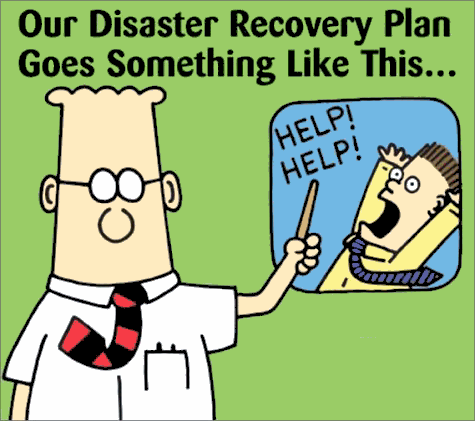

Plan de Recuperación de Desastre
Escuché en la radio que la ONEMI cuenta con teléfonos satelitales en las principales ciudades, pero que las baterías estaban descargadas, o no tenían baterías de repuestos.
En Juan Fernández una niña de 12 años tocó un gong, de 80 centimetros de díametros, para alertar a los habitantes de la isla de la llegada del tsunami. Sí, ¡el sistema de alarma de tsunami de Juan Fernández es un gong de 80 cms. de diametro!
Pareciera que el plan de recuperación de desastres de nuestro país es algo como esta famosa caricatura:

Al parecer un problema de redacción, una discusión casi semántica se mantiene entre la Armada y la ONEMI al usar el potencial en las comunicaciones entre estas instituciones sobre el tsunami: “podría haber maremoto” habría sido la frase usada.
En situaciones de emergencia el lenguaje debe ser directo, sin ambiguedades.
Además no basta con escribir bonitos planes y protocolos de emergencia si nunca se prueban.
El nuestro es un país sísmico, con una larga costa, es ridículo que no tengamos una cultura de prepararnos para este tipo de desastres.
En el ámbito de la infraestructura de comunicaciones y energía, claramente tenemos grandes falencias.
La seguridad ciudadana, ha sufrido por la demora en el despliegue de las fuerzas de orden, y por el mal manejo informativo de los medios.
En esta época en que estamos hiperconectados, con muchos medios de comunicación, y redes sociales, que permiten que cualquiera difunda información, la cantidad de ruido puede aumentar peligrosamente, ante eso es importante que las autoridades manejen mejor la información. No basta con tener un ministro que se presente ante las cámaras de TV. Si la gente usa redes sociales, estas deben estar cubiertas por cuentas oficiales del gobierno, ignoro si existe un twitter de la ONEMI, pero debería haber un twitter por cada ministerio por las instituciones que actúan en estas situaciones. Además deberían tener una cuenta en facebook oficial. Las redes sociales son un nuevo medio de comunicación que requiere atención, porque son muy vulnerables al rumor y la desinformación.
Esperemos que aprendamos de esto, y sepamos mejorar nuestro plan nacional de recuperación ante desastres.